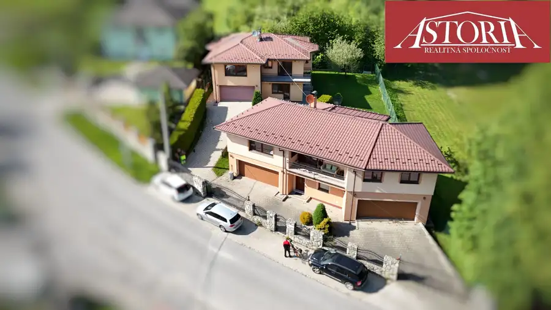
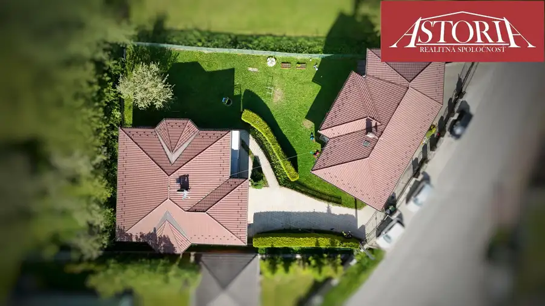
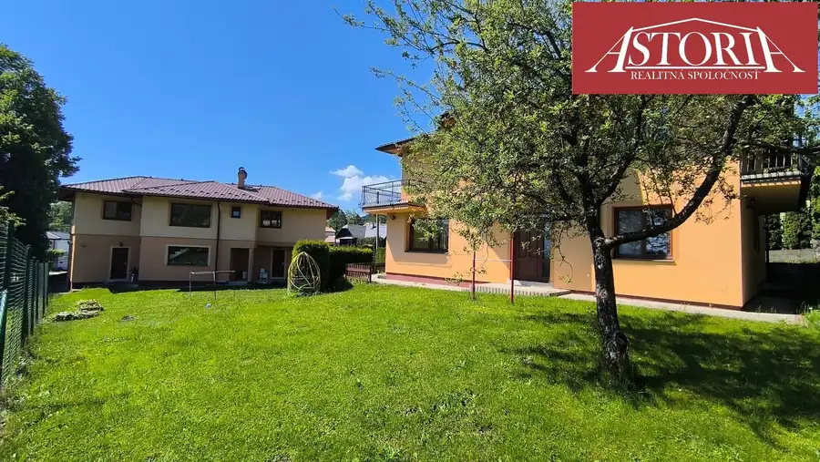
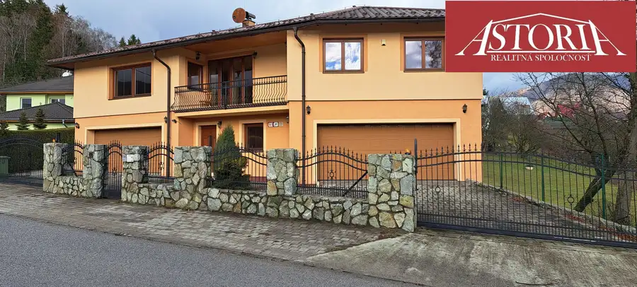
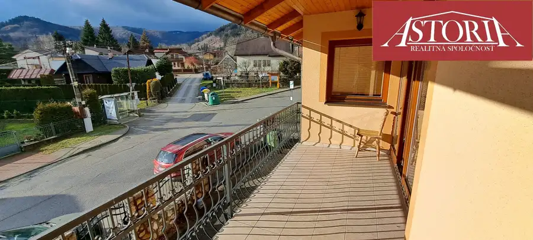
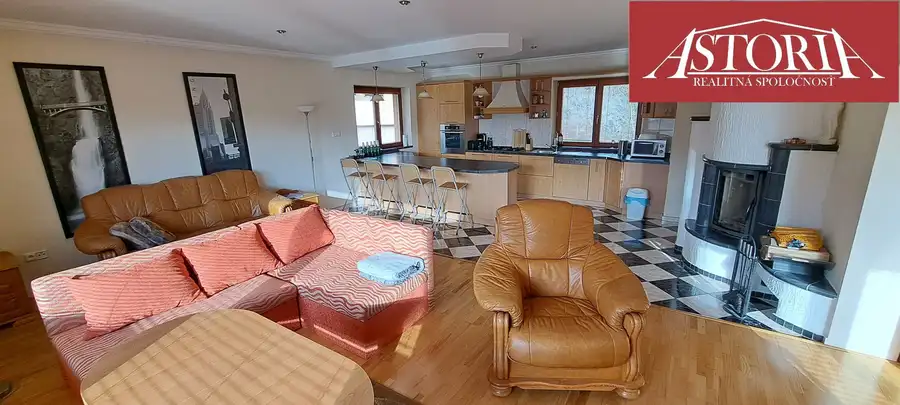
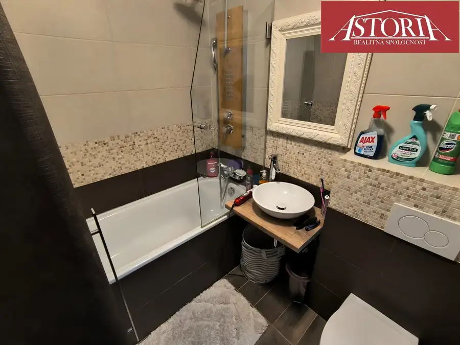
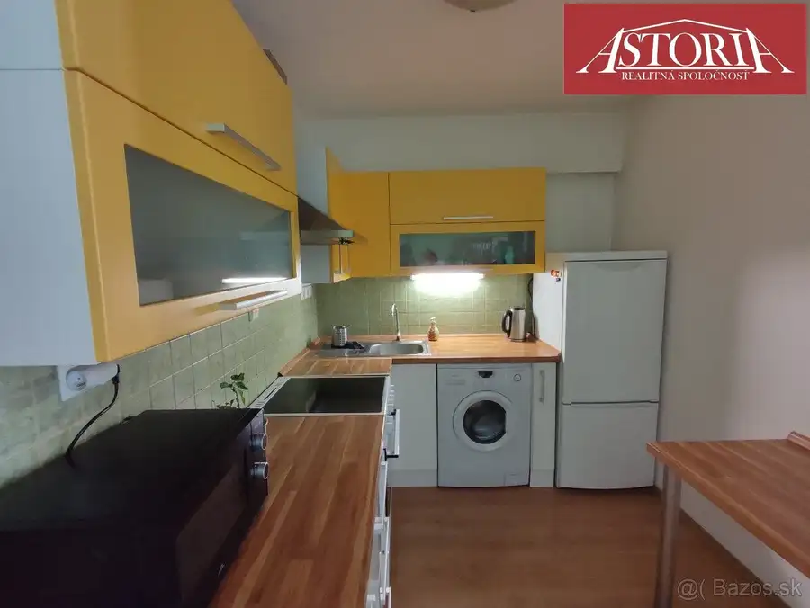
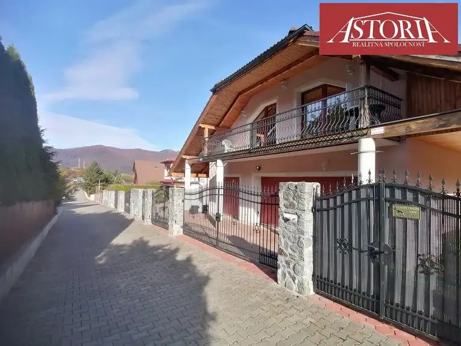

2 rodinné domy vedľa seba - Vrútky - Karvaša a Bláhovca
Vrútky






- Plocha350 m²
- StavNovostavba
O nehnuteľnosti
Hľadáte ideálne riešenie pre viacgeneračné bývanie, alebo hľadáte nehnuteľnosť, kde môžete spojiť podnikanie s bývaním? Máme pre vás exkluzívnu ponuku, aká sa často nevidí!Na predaj sú 2 moderné tehlové rodinné domy, ktoré stoja hneď vedľa seba na Ulici Karvaša a Bláhovca vo Vrútkach. Čo všetko získate?•Dom č. 1 (rok 2010): Veľkorysý 5-izbový byt na poschodí + 2-izbový byt s garážou na prízemí + záhrada 404m2.•Dom č. 2 (rok 2007): Priestranný 3-izbový byt na poschodí + 2 obrovské garáže až pre 4 autá na prízemí + záhrada 404m2. Sen každého motoristu alebo skvelý priestor na podnikanie, dielňu. Video z DRONU: https://youtu.be/yZfbRRKD8_c Základné informácie•Lokalita: Vrútky, Ulica Karvaša a Bláhovca•Materiál: Tehla•Poloha: Domy stoja vedľa seba•Celková cena za 2 domy: 956 000 € (možnosť kúpy aj jednotlivo)CENA JE STANOVENÁ NA ZÁKLADE AKTUÁLNEHO ZNALECKÉHO POSUDKU.________________________________________Dom č. 1 (väčší)•Cena: 498 000 €•Rok výstavby: 2010•Celková plocha: 566 m²•Zastavaná plocha: 162 m²•Záhrada: 404 m²•Dispozícia: Prízemie (2-izbový byt + garáž), Poschodie (5-izbový byt)•Inžinierske siete: Elektrina, plyn, voda, kanalizácia, vlastná studňa•Kúrenie: Plynové + krb•3D obhliadka domu č. 1:https://kuula.co/share/collection/7Mr0Q?logo=-1&info=0&fs=1&vr=1&zoom=1&sd=1&initload=0&autorotate=0.04&thumbs=-1________________________________________Dom č. 2 (s veľkými garážami)•Cena: 458 000 €•Rok výstavby: 2007•Celková plocha: 548 m²•Zastavaná plocha: 144 m²•Záhrada: 404 m²•Dispozícia: Prízemie (2 veľké garáže pre 4 autá), Poschodie (3-izbový byt)•Inžinierske siete: Elektrina, plyn, voda, kanalizácia•Kúrenie: Plynové + krb•3D obhliadka domu č. 2:https://kuula.co/share/collection/7MtJY?logo=-1&info=0&fs=1&vr=0&zoom=1&sd=1&initload=0&autorotate=0.04&thumbs=-1________________________________________Kontakt:•Maklér: Enki Hogh•Telefón: 0911 348 889•Mail: hogh@astoria.sk•Sprostredkovateľ: Realitná kancelária Reality ASTORIA, s.r.o.•Adresa RK: M.R.Štefánika 10, 036 01 MartinV cene je zahrnutý kompletný právny a klientsky servis:• Vypracovanie kúpnych zmlúv a návrhov na vklad do katastra.• Finančné poradenstvo a zabezpečenie prepisu energií.• Bezproblémové odovzdanie nehnuteľnosti pod záštitou kancelárie.
Parametre
- Druh
- Rodinný dom
- Dátum zverejnenia
- 13. 05. 2026
- Energetický certifikát budovy
- nie je
- Orientácia
- Južná, Severná
- Plocha pozemku
- 0 m²
- Počet balkónov
- 3
- Počet garáží
- 3
- Počet nadzemných podlaží
- 2
- Počet vonkajších parkovacích miest
- 4
- Rok výstavby
- 2010
- Stav nehnuteľnosti
- Novostavba
- Terén pozemku
- Mierne svahovitý
- Typ
- Predaj
- Typ konštrukcie
- Tehlová
- Vybavenie
- Balkón, Garáž, Vonkajšie parkovacie miesto
- Zastavaná plocha
- 306 m²
- Úžitková plocha
- 350 m²
Kde to je


Mohlo by Vás zaujímať

BytNové Cena na vyžádáníVeľmi pekný 1-izb. byt v Martine - Ľadoveň (Ul. Kronera) Martin 1-izbový30 m²1. podlažie
BytNové Cena na vyžádání2-izb. byt s balkónom - Martin -Priekopa -Medňanského Martin 2-izbový60 m²2. podlažie
DomNové Cena na vyžádáníDOM POD LESOM na prenájom - MARTIN - Kolónia Hviezda Martin 100 m²